01
產品設計工作流
建立並導入完整的產品設計工作流，串聯需求釐清、功能規劃、資訊架構、線框圖、互動原型、高擬真設計到開發交付，提升團隊設計與開發協作效率。
Case Study
串聯旅遊供應商與旅行社的 B2B 行程分銷平台，讓供給與需求更高效地連結。
S2 — Key Deliverables
01
建立並導入完整的產品設計工作流，串聯需求釐清、功能規劃、資訊架構、線框圖、互動原型、高擬真設計到開發交付，提升團隊設計與開發協作效率。
02
建立並導入可擴展的設計系統，涵蓋設計代碼、元件庫、設計準則、設計模式與介面狀態，同步考量前端實作邏輯，建立一致且可維護的產品體驗。
03
透過使用者訪談、市場與競品研究，重新釐清使用者需求與產品問題；並運用消費者肖像（人物誌與消費者觀點）、商業漏斗（使用者旅程與轉換點）與關鍵指標（公司商業指標、產品成功指標、觸點階段指標）三項工具，系統性梳理問題全貌，協助團隊定義功能優先順序與產品發展方向。
04
與工程團隊共同完成產品第一次大規模迭代，從使用者需求與實作限制出發，參與資料結構重構與產品流程調整，在使用體驗、技術可行性與商業目標之間取得平衡。
05
主導客戶提案與產品展示，協助團隊驗證產品價值並成功取得公司首位客戶。
S3 — Overview
S4 — Problem Discovery
S4-01
進團隊時，公司告知的需求是：許多中小型旅行社業務與個人接案者（業界稱「牛頭」）手上握有大量客戶，卻必須在不同大型旅行社的平台之間來回搜尋分銷產品，部分大型旅行社甚至仍依賴 LINE 社團作為行程分銷管道，導致業務與接案者在分銷時效率低落、管理不易。公司希望打造一個讓需求方能高效進行分銷的平台——這是我們最初的產品假設：一個服務需求方的行程分銷平台。
S4-02
我想確認兩件事：
B2B 產品的競品分析並不容易，因為非同業會員無法看見同業價格等機密資訊。所幸一間即將上市的綜合旅行社願意讓我們參考他們既有的 B2B 分銷平台，分析聚焦於：會員審核如何驗證從業人員身分、B2B 行程查找方式與一般 C 端平台的差異、B2B 行程分類結構、B2B 端與 C 端直客在行程資訊頁面上看到的資訊差異，以及上架流程。
得到以下結論：會員驗證透過公司統一編號與對應公司名片進行審核；查找方式分為導覽搜尋與關鍵字搜尋，導覽搜尋以地理位置分類、並將熱門地點提升至第一層；B2B 行程資訊頁面的優先資訊排序為是否保證出團、出發日期、已收人數、最低成團人數、同業價格、建議直售價格；該平台屬於單一供應商的自家平台，而 Channel-T 面向多家供應商，上架行程這項功能沒有直接可參考的既有設計。
同時，當時市面上並沒有開放給所有旅行社同業使用的 B2B 行程分銷平台。為了確認這是否是一個有獲利空間的產品，我透過交通部觀光署提供的從業人員公開資料，進行市場份額分析與營收試算：2024 年全台領有導遊執照者 47,773 人、領隊執照者 71,493 人，甲、乙種旅行社共 3,613 家，綜合旅行社 559 間。
假設領有導遊及領隊執照者有10%是牛頭，然後每間旅行社平均有5位業務，產品上線第一年滲透率 10%、轉換率 8%，以 常見SaaS 基礎月費 399 元試算，若目標客群僅侷限於需求端（牛頭與旅行社業務），第一年預期營收合計約新台幣 125.5 萬元，對一間 7–12 人的小型公司而言並不足夠。
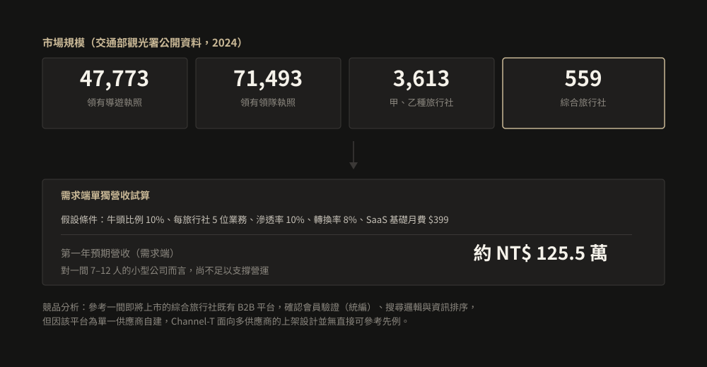
S4-03
這兩項驗證共同指向同一個結論：原始假設需要被修正。
若將供給端（供應商）納入目標客群，以 559 間綜合旅行社、滲透率 10%、轉換率 8%、月費 2 萬元試算，供給端可貢獻約 107.3 萬元營收，加計需求端後，第一年預期營收可達約 233 萬元，加上政府標案經費，方能勉強支撐一間 7–12 人的公司。
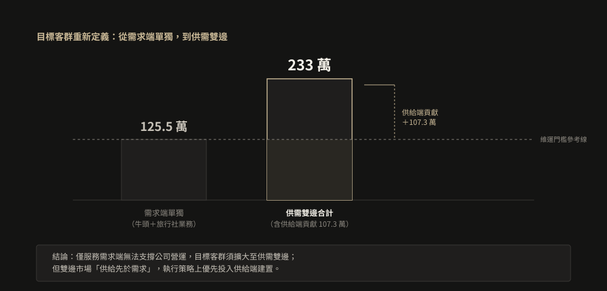
S4-04
基於這個重新聚焦後的方向，我們前往某綜合旅行社，與其同業、直售、行銷、線控部門進行易用性測試與使用者訪談。易用性測試使用 Figma 製作的原型，涵蓋從原始行程 PDF 上傳、AI 解析欄位填槽供編輯、完整行程資訊頁面，到上架行程管理編輯後台的完整流程。針對同業與線控部門，我們聚焦 PDF 上傳、AI 解析與上架管理後台，確認供給端資料庫欄位與實務建議；針對直售與行銷部門，則聚焦完整行程資訊頁面內容是否足以面向 B 端使用者，確認需求端資料庫欄位與實務建議。
S4-05
S4-06
綜合競品、市場與使用者研究，我們確認：
S5 — Constraints
進入團隊時，我面對的是一連串疊加的限制，這些條件也形塑了後續產品決策的邊界。
S5-01
既有系統採用較早期的技術棧，前後端未分離，維護與擴充上有一定限制；整體資訊架構仍有相當大的優化空間。因此，我面臨的第一個核心問題是：應該延續既有產品進行功能擴充，還是重新建立一套更適合產品長期發展的系統？
S5-02
初期整個開發團隊規模有限，同時公司的營運模式高度仰賴爭取政府標案，開發時程因此與標案書規定時間高度綁定，對團隊的開發節奏造成較大壓力。我同時負責 UI/UX 設計與產品整體規劃，因此，無法以「一次完成所有功能」作為產品開發方式，而必須持續判斷哪些問題值得優先解決，以及哪些功能可以延後。
S5-03
專案初期，設計、開發與行銷之間的協作機制尚未成熟，行銷規劃與開發排程有時無法即時對齊，需要在有限時間內重新調整需求優先順序與開發安排。因此，如何在不同部門需求之間建立共識，並在資源有限的情況下維持產品開發方向，也成為專案執行上的重要挑戰。
S6 — Product Decisions
面對既有產品、技術架構、開發資源與時程等限制，我需要先做出一個關鍵判斷：是延續既有系統持續擴充，還是重新建立一套更適合產品長期發展的系統？
S6-01
針對可維護性以及後續開發效率，我與工程團隊進行詳細的評估，最終我向管理層提出重新開發的建議。
管理層決定採納重建的方向，改採前後端分離的架構，並由我主導產品需求確認與功能規劃，帶領團隊從零開始重新設計這個產品。
S6-02
從 B2B 雙邊市場的供需邏輯來看，需求方能否有效使用平台，建立在平台是否具備足夠且有價值的行程供給之上。因此，我重新從供給與需求兩側思考產品價值：
最終，我將產品策略從「以需求方為主要服務對象」調整為「建立供給與需求雙邊價值」，並在產品早期優先建立供給端價值，為後續需求端的成長建立基礎。
S6-03
為了將前期研究成果轉化為可執行的產品策略，我進一步運用以下三項工具，建立從使用者需求、商業轉換到產品目標的完整框架：
消費者肖像 — 人物誌＋消費者觀點
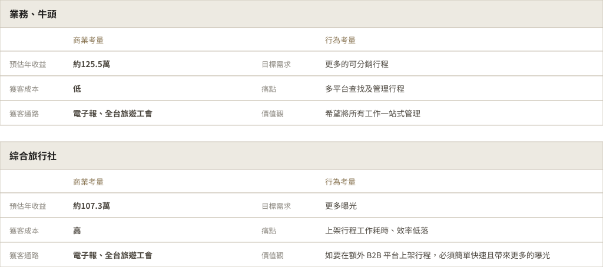
商業漏斗 — 使用者旅程＋關鍵轉換點
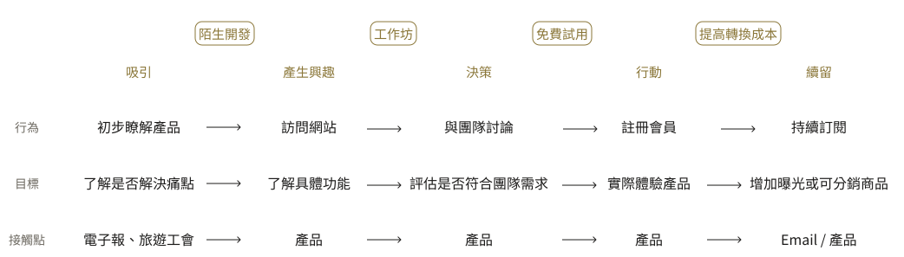
關鍵指標 — 公司商業指標＋產品成功指標＋觸點階段指標
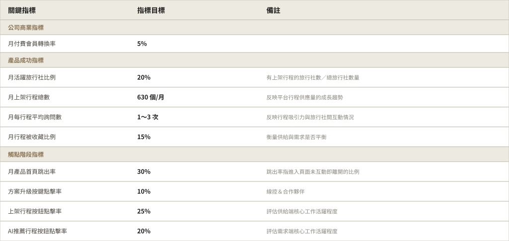
S6-04
綜合前期研究、產品策略與開發限制，團隊決定優先建立支撐供給端與需求端的核心功能。
因此，MVP 的產品核心可以濃縮為：供給方能夠上架與管理行程 → 需求方能夠找到行程 → 雙方能夠產生分銷溝通。
S7 — UX Design Process
S7-01
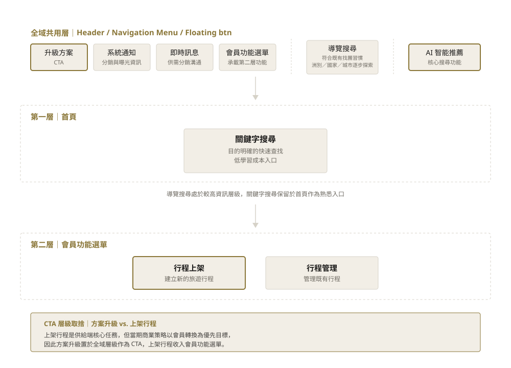
Header 作為登入後的主要功能入口，承載跨頁面使用頻率高，且與產品核心價值及商業目標直接相關的功能：
資訊架構排序同時考量使用者既有習慣與產品策略：導覽搜尋與 AI 智能推薦處於較高的資訊層級，而關鍵字搜尋則保留在首頁，確保使用者仍能快速使用熟悉的搜尋方式。
會員功能主要承載供給端的核心工作流程：上架行程（建立新的旅遊行程）、管理既有行程（管理已建立的行程）。這兩項功能需要使用者完成較多操作，因此與第一層的行程搜尋功能區隔，放入會員功能選單中。
在資訊架構初期，「方案升級」與「上架行程」哪一項應成為最高層級 CTA，是團隊討論較多的議題。從產品使用情境來看，上架行程是供給端最核心的任務；但從當期商業策略與關鍵指標來看，會員數量與會員方案轉換是更優先的產品目標。
團隊最終選擇將方案升級置於全域層級，並以 CTA 形式呈現；上架行程則放入會員功能選單。這是一個基於當期關鍵指標所做的產品取捨，我將其視為後續產品迭代時可以重新驗證的 IA 假設，透過會員升級與行程上架等實際使用數據，重新評估 CTA 層級是否需要調整。
S7-02
在確立資訊架構後，我進一步將前期使用者研究中發現的實務情境，轉化為具體的使用者流程。
透過使用者流程，進一步與其他部門討論技術細節與商業規劃。
困難：
使用者訪談發現，同一個母團可能對應多個不同出發日期的子團，而供應商提供的原始行程檔案格式也相當多元，可能是完整的每日行程，也可能只提供部分資訊，例如不同日期的同業價格。
UX 決策：
應該將不同出發日期拆分成獨立頁面，讓使用者逐一確認？還是將價格等子行程差異資訊以「最低價格起」的兼容方式呈現，讓使用者快速完成上架？
決策方式：
我針對兩種方案製作 Prototype，並透過易用性測試進行比較。測試結果顯示，使用者更重視快速完成上架、降低重複操作，對於價格資訊則可以接受以「最低價格起」呈現，後續再由供需雙方進行確認。
設計原則：AI 不需要一次處理所有複雜情境，而是先協助使用者快速完成上架，再將需要人工確認的資訊留給後續流程處理。
行程完成建立後，會隨著上架流程產生不同階段。因此，我將行程管理依照實際生命週期拆分為：草稿 → 待上架 → 已上架 → 已下架。透過狀態分類，讓供給端可以快速掌握不同階段的行程，並進行後續管理。
情境：
一般情境外，使用者有需求將特定行程預先上架但不公開，或是暫時先下架不供分銷
UX 決策：
「草稿」由使用者主動設定；「已下架」則兼容系統自動判定與使用者主動操作
提升產品生命週期的彈性，讓產品狀態更貼近使用者的實際操作情境與需求。
情境：
使用者研究也發現，一個行程從建立、上架到後續分銷，可能涉及同公司的不同部門，因此流程不能只設計成單一使用者操作。
團隊決策：
開發團隊進一步討論，如何邀請協作者？協作者是否必須來自同一家公司？系統如何判斷會員是否屬於同一家公司？不同會員角色是否應具有不同的協作權限？
跨部門協作：
這些問題同時涉及使用者流程、會員機制與系統權限邏輯。透過使用者流程，開發團隊進一步與管理層及行銷部門共同確立會員機制、系統權限及會員方案的具體細節。
S7-03
與利害關係人對齊完成使用者流程後，我進一步將流程轉化為 Wireframe，透過視覺化的線框稿確定在畫面上的位置以及技術細節。
行程上架是供給端最核心的工作流程，因此 Wireframe 首先聚焦於如何降低供應商建立行程的操作成本。流程從原始行程檔案上傳開始，經過 AI 解析，再進入資訊核對與人工修正，最後完成行程上架：
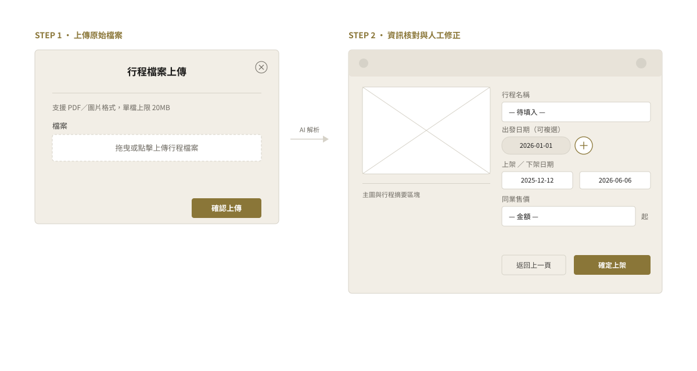
MVP 的產品邏輯為：行程建立 → 使用者設定標籤 → 系統分類 → 導覽搜尋／AI 推薦。
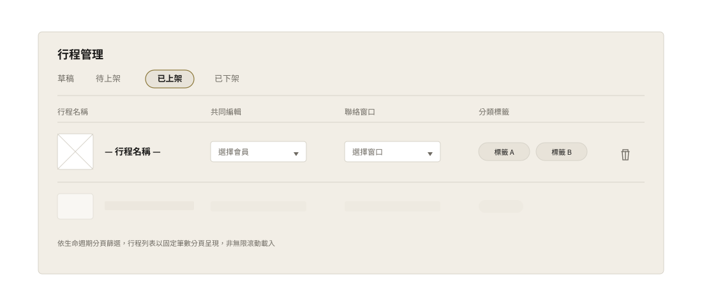
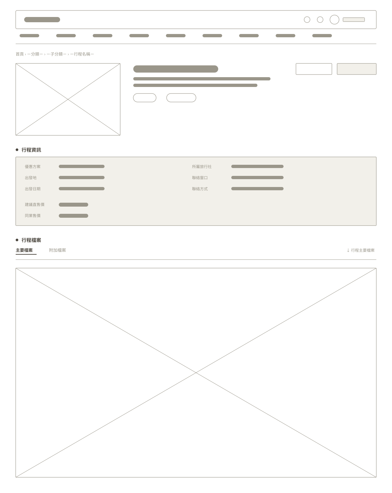
S8 — UI Design
因為有簽署 NDA，這個階段的重點不是視覺呈現，而是根據實際使用情境，進一步定義資訊層級、元件選擇與互動邏輯，讓設計能真正支援使用者完成工作。
S8-01
解析核對頁的核心任務，是讓供給端能在不離開原始文件的情況下，快速確認 AI 解析結果並完成行程上架。
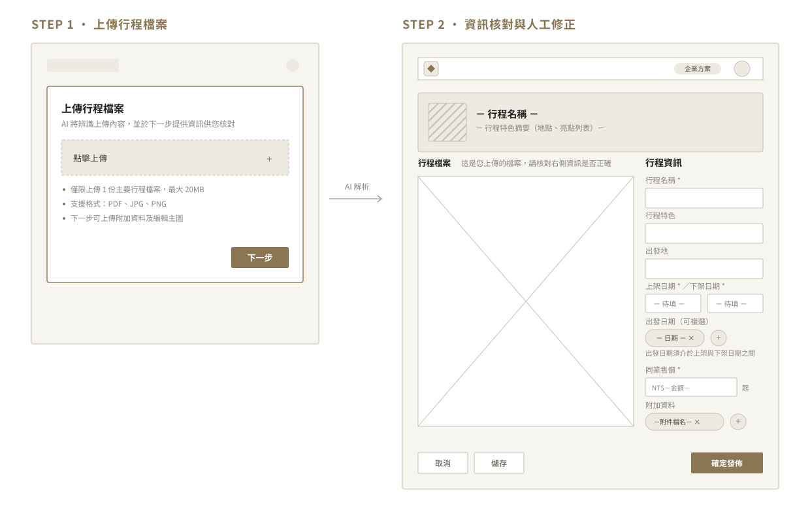
行程檔案上傳使用 Modal 作為主要互動容器，搭配背景遮罩讓使用者聚焦於目前的上傳任務。由於檔案上傳本身並不需要複雜的操作，因此不另外建立頁面，避免增加不必要的頁面跳轉。同時，Modal 內容會在 Session 中保留，即使使用者暫時關閉 Modal 處理其他工作，回到上傳流程時仍能保留原本的檔案狀態，避免重新上傳。
進入解析核對頁後，左側使用 iframe 嵌入原始 PDF，右側呈現 AI 解析後的欄位。這樣的配置讓使用者可以直接對照原始文件與解析結果，不需要另外開啟 PDF 或在不同視窗之間切換。由於行程檔案可能包含多頁資訊，因此保留原始 PDF 的瀏覽能力，讓使用者可以依照原始內容逐項核對。
右側解析欄位並沒有使用單一的 Input Pattern，而是根據不同資料型態設計對應的互動方式：
讓互動方式符合資料本身的特性，而不是讓所有欄位套用相同的輸入模式。
S8-02
行程管理頁的使用情境與一般內容網站不同，它主要服務供給端日常管理大量既有行程，因此設計重點放在資訊密度、搜尋效率與編輯成本。
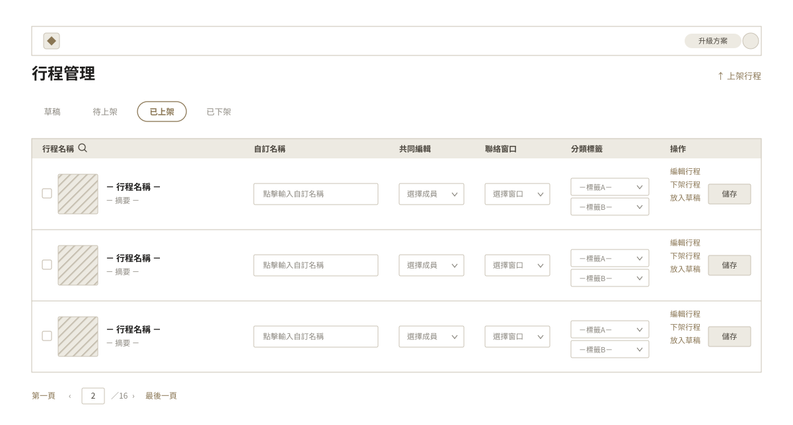
所有行程以 Table 呈現，讓使用者可以在同一視線範圍內快速比較多筆行程資訊。同時在 Table Header 提供關鍵字搜尋，讓使用者可以快速定位特定行程。
每筆行程最右側配置 Save Button。初始狀態為 Disabled；當使用者修改名稱、標籤、聯絡窗口等資料後，Button 才轉為 Primary，提醒使用者目前存在尚未儲存的變更。這樣的設計讓使用者可以連續修改多個欄位，確認完成後再一次儲存，而不是每修改一個欄位就立即送出請求。因此，同時降低不必要的 API Request，也讓「編輯 → 確認 → 儲存」的操作邏輯更加清楚。
聯絡窗口與共同編輯者需要支援多選，因此使用 Multi-select Dropdown。已選擇的會員不直接全部展開在 Table 中，而是收納於 Dropdown 內；使用者需要確認時，再展開查看已勾選的會員。這是一個資訊密度上的取捨：將低頻查看的詳細資訊收進第二層操作，換取更高的單頁資訊容量。
行程列表採固定筆數的 Pagination，而非 Infinite Scroll。原因在於行程管理屬於搜尋與定位型工作，使用者通常是為了找到特定行程，而不是持續探索更多內容。因此 Pagination 能讓每一頁維持穩定的資訊量，也讓使用者更容易掌握目前所在位置與重新定位特定行程。
S8-03
行程資訊頁主要服務需求端，核心任務是讓旅行社業務能快速理解行程內容、判斷是否符合需求，並進一步與供給端建立聯繫。
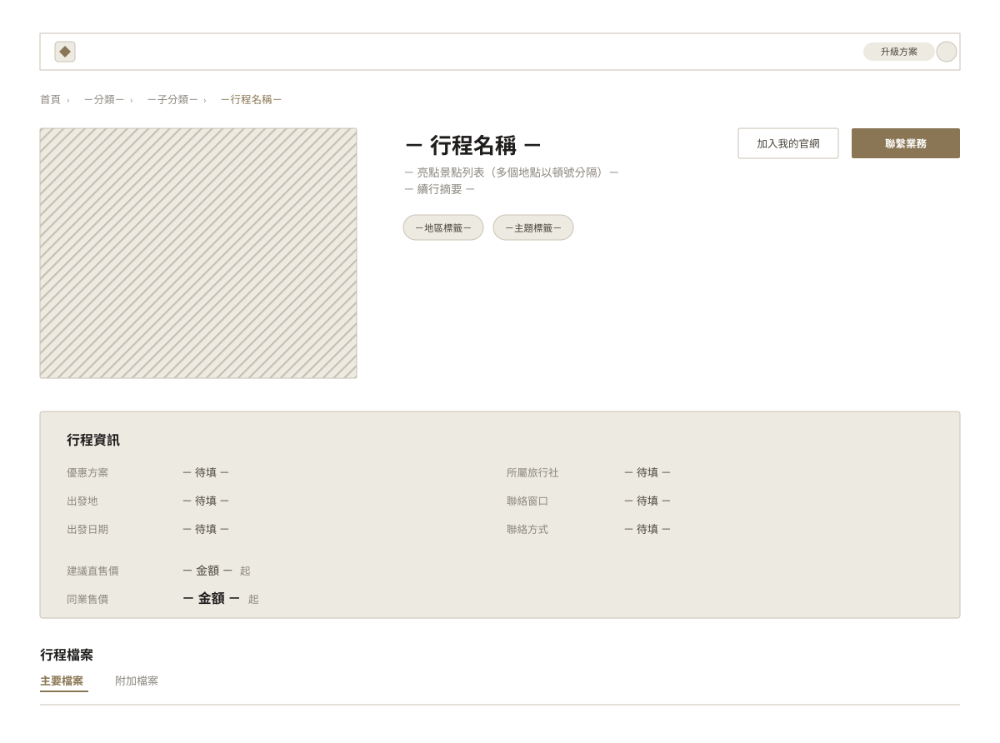
頁面加入 Breadcrumb，並沿用平台既有的地理導覽結構。使用者進入行程資訊頁後，可以透過 Breadcrumb 返回不同層級的地理分類，延伸尋找其他相關行程。
Hero 區域主要呈現行程主圖與行程名稱，讓使用者進入頁面後可以快速理解這個行程的主題。優惠方案等重要資訊則獨立成 Section，透過明顯的視覺區隔建立資訊層級，讓使用者能快速掃描核心內容。
主要 CTA 設定為「聯繫業務」，並對應供給端在行程管理中設定的聯絡窗口。因此，供給端設定的聯絡窗口會直接影響需求端後續的聯繫行為，形成：供給端設定聯絡窗口 → 需求端查看行程 → 聯繫對應業務。
S9 — Design System
完成核心頁面的 UI 設計後，我進一步將產品中反覆出現的視覺規則、元件、使用規範與特殊狀態系統化，建立一套可持續使用的 Design System。
S9-01
首先建立產品最基礎的視覺語言，主要包含：
Core Style 作為後續 Token 與 Component 的視覺基礎，避免不同頁面或功能各自產生不同的視覺規則。

S9-02
我進一步將設計規則轉換為可被系統化管理的 Design Token。Token 採用兩層架構：
命名則採用一致的階層式結構，例如：prd/sys/size/spacing/inset/md。透過一致的命名方式，讓設計規則更容易被搜尋、理解與維護。當產品需要調整尺寸、間距等規則時，也能從 Token 層級集中管理，而不需要逐一修改頁面與元件。
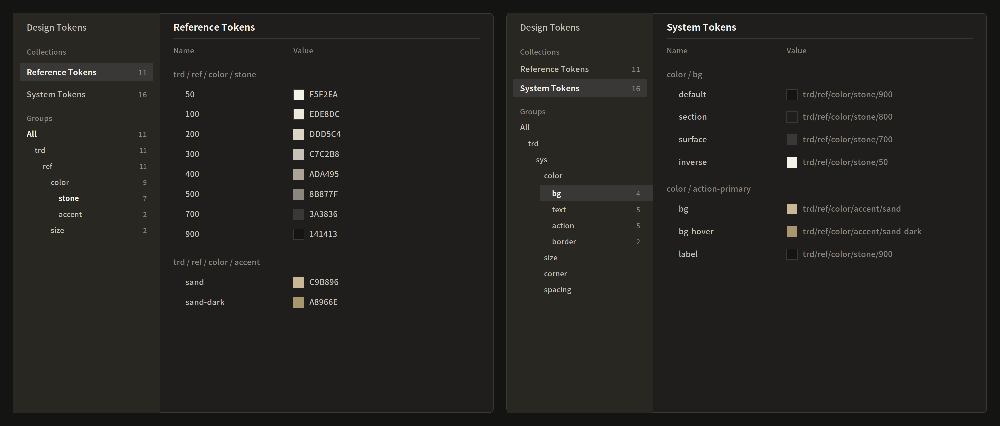
S9-03
我將產品中反覆使用的 UI 元件建立成 Component Library。除了建立元件本身，也針對不同使用情境建立 Variants 與 States。
在建立 Component Library 的過程中，我也與前端工程師共同討論元件的實作方式，並以 shadcn/ui 作為主要的元件與 Icon 使用基礎。選擇這個方向的主要原因，是設計與前端都能直接以 shadcn/ui 的元件 Prototype 作為共同參考。除了視覺樣式之外，也能直接確認元件在不同狀態下的互動方式，例如開啟、選取、Hover、Disabled 等。因此，設計端不需要單獨描述每個元件「應該如何互動」，前端也能直接參考既有的互動邏輯進行實作，降低雙方在元件行為上的溝通成本。
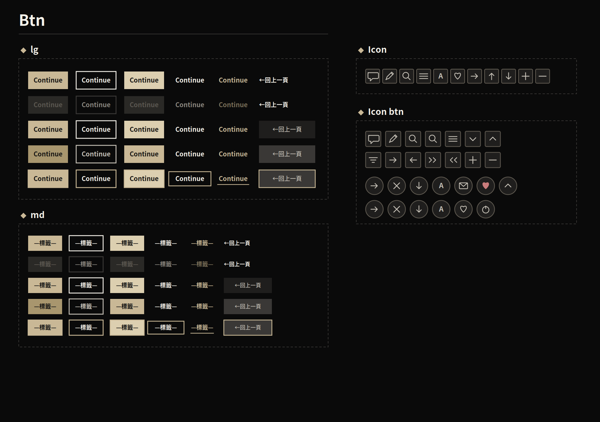
S9-04
Component Library 解決「有哪些元件可以使用」，Design Guideline 則進一步定義「這些元件應該如何使用」。我整理產品中常見的設計規範，包括：Button 的 Inset 與尺寸規格、Spacing / Distance System、元子與分子等元件的組織方式、圖片尺寸與處理方式、不同裝置下 Toast 的位置與距離規範、常見元件的使用原則。例如同樣是 Toast，在不同裝置上需要考量畫面邊界、操作區域與內容高度，因此不只定義元件本身，也規範其與畫面邊界的距離。這一層的目的，是讓設計決策從「個別設計師的判斷」轉化成團隊可以共同遵循的規則。
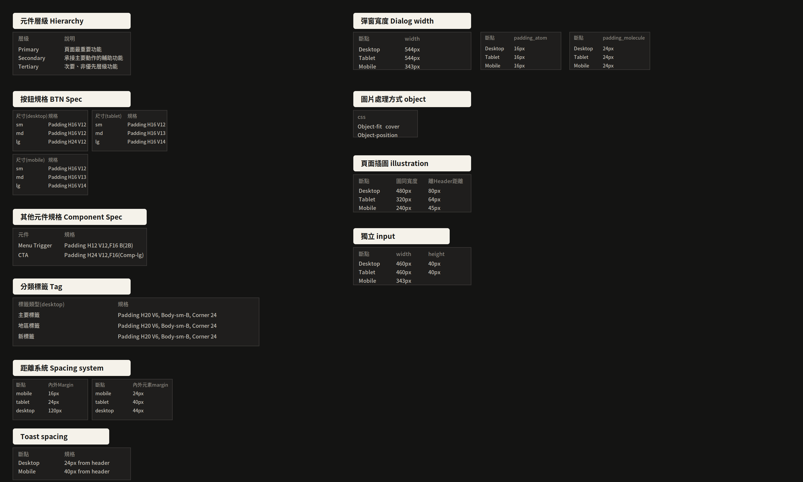
S9-05
Design Pattern 進一步處理特定產品情境下，元件應該如何組合與回饋。例如表單的必填欄位：當使用者沒有填寫必要資訊便直接送出時，不只是將 Input 標示為 Error，而是同時定義錯誤文字、文字層級、顏色、欄位狀態，以及使用者下一步應如何修正。因此，同一個 Input Component 在不同產品情境下，可以透過 Pattern 建立一致的使用方式，讓 Design System 不只是視覺元件集合，而開始涵蓋使用者操作與回饋邏輯。
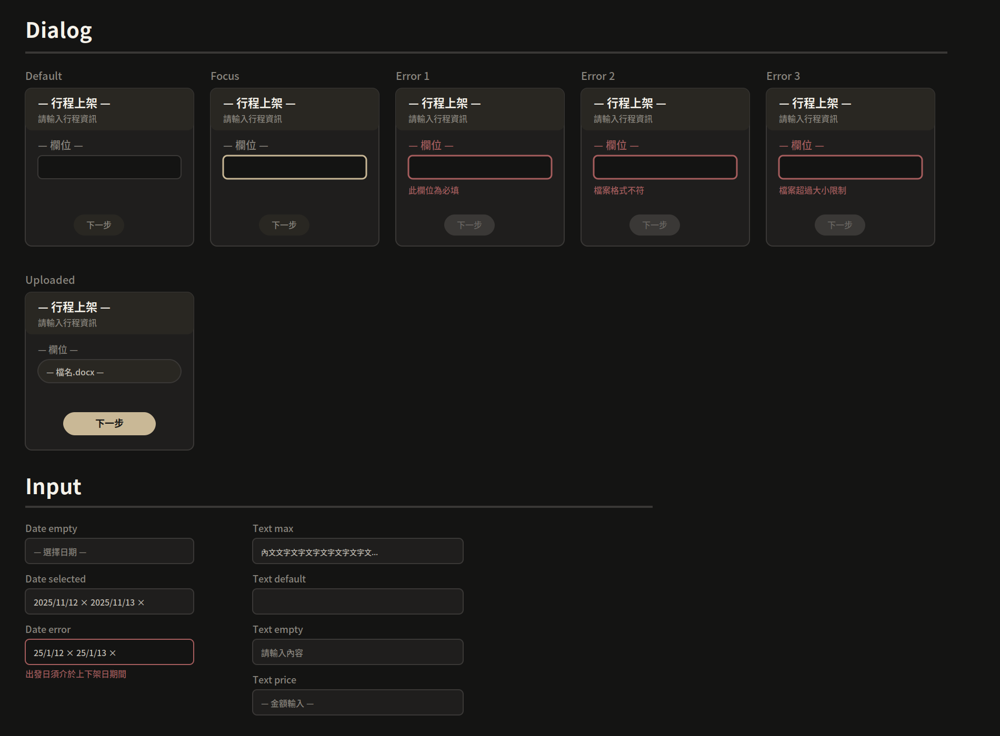
S9-06
最後，我將正常 User Flow 之外的特殊狀態獨立整理，避免每個頁面遇到特殊情況時重新定義視覺：Loading、Skeleton、Empty State、404、500、無資料、錯誤狀態。這些狀態平常不一定會出現在主要操作流程中，但卻直接影響產品在實際使用時的完整性。因此，我將這些狀態納入 Design System，讓產品即使進入異常、等待或無資料情境，也能維持一致的資訊呈現與使用者回饋。
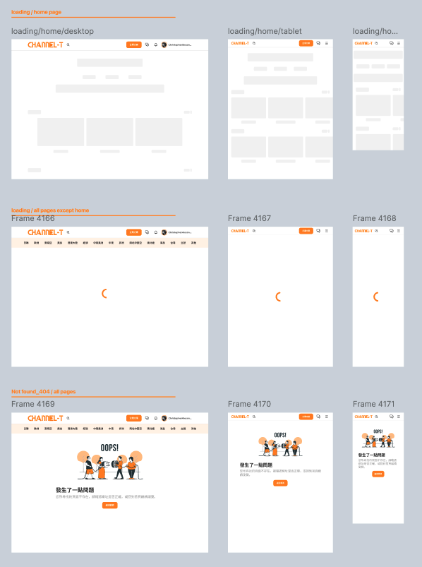
S9-07
最終，這套 Design System 並不是獨立存在的設計文件，而是與實際產品開發相互對應：
Core Style → Design Token → Component Library → Design Guideline → Design Pattern → UI States
這讓 Design System 從單純的「視覺規範」進一步成為設計與工程共同使用的產品基礎。也因此，後續新增功能或進行產品迭代時，可以直接建立在既有的 Token、Component 與 Pattern 上，而不是每次重新定義介面規則，降低設計、開發與後續維護的成本。
S10 — Product Iteration
MVP 上線後，我根據使用者回饋與實際使用情境，重新檢視前期建立的產品假設與操作流程。這個階段的重點不再只是「把功能做出來」，而是確認原先的設計是否真的能降低使用者的工作負擔，並進一步調整產品的互動方式、資料結構與資訊呈現。
S10-01
因此，我重新思考這個問題：當技術無法立即消除等待時間時，是否可以透過設計降低「等待」對工作流程造成的影響？最終，我將設計目標從「縮短 AI 解析時間」轉向避免 AI 解析阻斷使用者工作。
原本 AI 解析使用 Modal 呈現，使用者必須停留在 Modal 中等待解析完成，整個頁面會被暫時鎖定。我將其改為右下角 Fixed Snackbar，並讓解析狀態在不同頁面中持續存在，使用者不需停留在原本的上傳流程，可以離開目前頁面繼續處理其他工作。
Snackbar 不只是提示「解析中」，而是提供持續性的進度文字回饋，讓使用者即使離開原本的上傳頁面，也能知道目前的處理狀態。系統的等待狀態從「Modal 內等待」轉變為「背景處理＋持續性狀態回饋」。
更重要的改變，是使用者不需要等待前一個檔案解析完成，就可以繼續上傳下一份行程。即使 AI 本身的總解析時間沒有因此大幅縮短，使用者完成「上傳工作」所需要的等待與流程中斷大幅降低。這次設計真正解決的並不是 AI 的技術效能，而是將「AI 等待時間」與「使用者工作時間」解耦——系統背景處理 → 使用者持續工作 → 回頭確認結果。
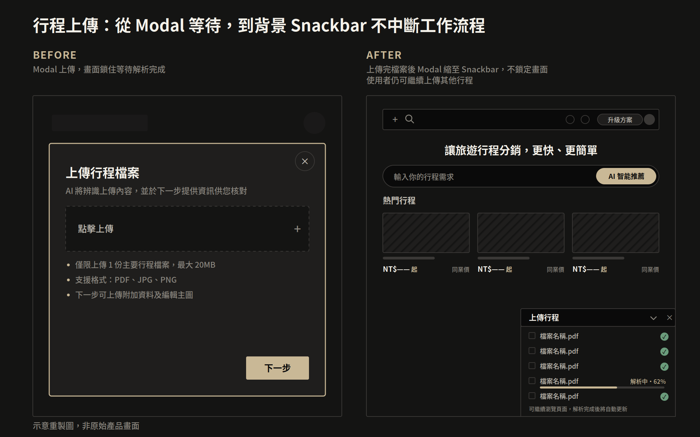
S10-02
上線初期，主要供應商多透過系統介接提供行程資料，但各供應商提供的資料欄位不一，且與前端頁面原先定義的呈現欄位無法完全對應，導致部分供應商資料無法被完整承接與呈現，造成行程資訊頁的內容不完整。
原先的設計，是將不同出發日期視為同一行程下的資訊，並將不同子團的資料內容整合至母團的共用欄位中——例如價格會從不同子團中抓取最低值，以「起」作為價格呈現，讓供給方與需求方透過站內聊天進一步確認細節。這樣的設計在初期可以簡化資訊呈現與資料結構，但也意味著不同子團原本各自具備的資訊被壓縮成母團層級的摘要資訊，使用者無法直接查看特定出發日期所對應的完整內容。
因此我與後端工程師重新檢視所有供應商資料欄位與資料結構，並回頭檢視原本的行程資料模型與前端呈現方式。這次重新檢視後，最大的改變是重新定義了母團與子團的資料關係。
重新定義母團與子團的資料關係：每一個子團依附於母團之下獨立存在，使用者可以直接依照不同出發日期查看對應的子團資訊。這使得需求方不需要再透過「最低價＋起」推測不同日期的實際內容，供需雙方在進一步聯繫時，也可以直接針對特定日期與特定行程進行溝通，降低資訊確認成本。
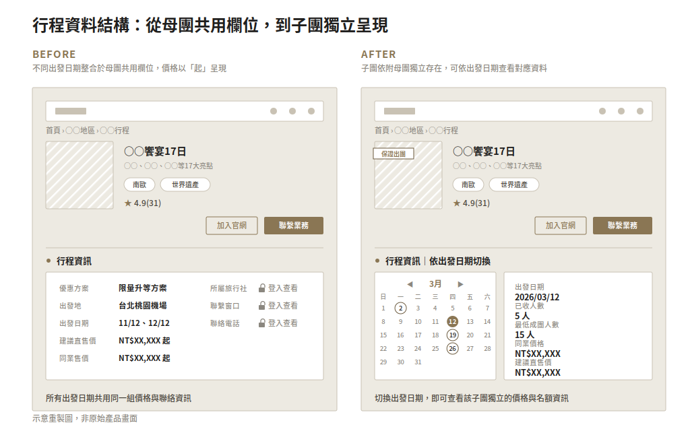
S10-03
我重新思考：如果 AI 已經能夠解析行程內容，是否還需要讓使用者花時間逐一判斷與設定標籤？如果由 AI 進行標籤的提供，但同時也讓使用者有去修改的自由，是否能解決這問題？
迭代後將標籤建立流程改為：AI 解析行程 → 根據既有標籤規則自動建立標籤 → 使用者確認與修改。AI 不再只是協助填入行程基本資料，也進一步參與行程分類，但我沒有完全取消人工控制，而是保留使用者修改標籤的介面。
因此形成：AI 負責降低分類成本，使用者保留最終判斷權，也讓「資料建立」與「搜尋／推薦」之間形成更完整的產品閉環。
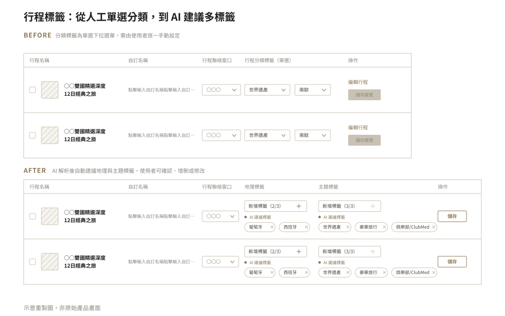
S10-04
三個案例分別從不同層面重新檢視 MVP：行程上架從「AI 是否成功解析」轉向「使用者是否能不中斷地完成上架工作」；資料結構從「原本定義的行程資訊」轉向「能支援真實資料與實際溝通情境的產品結構」；行程標籤從「使用者手動分類」轉向「AI 輔助分類、使用者確認」。
這次迭代讓我重新理解 MVP 的價值：MVP 並不是產品的終點，而是一個用來驗證產品假設、暴露實際問題，再持續修正產品結構的起點。因此，後續設計不再只關注「功能有沒有完成」，而是進一步檢視使用者是否能更有效率地完成工作，以及產品的資料與互動邏輯是否能支撐下一階段的產品發展。
S11 — Business Validation
在產品開發過程中，我實際參與 3 次客戶提案，包含 2 次實體提案與 1 次線上提案。三次提案分別發生在不同產品階段，也讓我逐步驗證：產品概念 → MVP → 實際商業價值。最終成功協助團隊取得 2 家供應端客戶。
S11-01
在 MVP 完成前，我與創辦人一同展開第一次客戶提案。當時我以 Figma 製作產品原型，向客戶闡述產品核心價值，並透過原型展示行程上架流程。對方對產品方向表示認同，但選擇保持觀望，希望等產品開發完成後再進一步討論。這次提案最終沒有促成合作，但也讓我更清楚意識到：光有產品概念與原型，還不足以讓客戶做出合作承諾；真正的產品價值，需要透過可實際操作的產品體驗來驗證。
S11-02
MVP 上線後，我與客戶的資訊部門、同業部門及公司創辦人一同進行第二次實體提案。這次我們展示的不再是原型，而是可實際操作的完整產品。對方對產品展現高度興趣，並開始針對商業合作條件提出具體問題，代表討論已經從「產品是否有價值」進一步進入「是否值得合作」。約一週後，我們成功與該客戶簽署合作意向書（MOU），成為公司第一位正式簽署合作意向的供給端客戶。
S11-03
第三次提案的契機，是客戶主動聯繫我們，希望進一步了解產品。這次由我獨自進行線上提案，完整展示從行程上架、行程管理到行程搜尋的核心操作流程。除了展示產品如何解決供給端的行程建立與管理問題，我也進一步說明平台的雙邊價值：除了降低供給方的操作成本，也能透過需求端會員的加入，為供給方創造更多行程曝光與分銷機會。過程中，客戶進一步詢問代理商協作模式的具體操作方式，我則根據當時產品的會員角色與權限設計進行說明。當天，雙方即完成合作意向書（MOU）的簽署，取得第二位供給端客戶。
S11-04
回頭看這三次提案，我認為它們其實反映了產品從概念走向市場的三個階段——從第一次的「這個產品有沒有價值？」，到第二次的「我們是否願意合作？」，再到第三次的「這個產品如何符合我們實際的商業情境？」，提案本身也隨著產品成熟度逐步從概念驗證走向商業驗證。而對我而言，這也完成了從研究使用者問題、定義產品策略、設計產品，到驗證產品價值的一個完整產品設計循環。
S12 — Retrospective
這個專案讓我完整經歷了一次從問題探索、產品策略、MVP 建立、UX/UI 設計、Design System、產品迭代到商業驗證的產品設計流程。過程中，我最大的收穫不是完成了多少頁面，而是逐漸理解設計師在產品團隊中的角色：設計不只是將需求轉化為介面，而是持續在使用者需求 × 商業目標 × 技術限制之間做出設計決策。
S12-01
在這個專案開始時，我主要關注的是介面與使用流程。但隨著產品從研究進入實際開發，我逐漸參與到更前期的產品問題：
這讓我開始從「如何設計一個功能？」轉向思考：「為什麼要做這個功能？它解決了誰的問題？又如何支持產品與商業目標？」這也是我認為自己在這個專案中最大的角色轉變：從 UI 執行逐漸走向產品決策。
S12-02
這個專案也讓我體會到，沒有任何一個設計決策應該被視為最終答案。AI 行程解析最初關注的是「解析是否成功」，後來發現真正影響使用者的是等待時間與工作流程是否被中斷，因此將設計從 Modal 轉向 Snackbar；行程資料結構最初以較摘要的方式整合不同日期的行程資訊，但實際接觸供應商資料後，重新檢視母團與子團之間的資料關係，並調整產品呈現方式；行程標籤最初由使用者手動分類，後續則利用 AI 協助建立標籤，同時保留人工修改能力，降低使用者的分類成本。
這些案例讓我更加確立：好的產品設計，不是一次做出「正確答案」，而是建立一個能夠持續發現問題、驗證假設並修正產品的過程。
S12-03
如果重新做一次這個產品，我會更早建立產品資料模型、使用者權限與核心商業指標之間的關聯，讓產品策略、技術架構與 UX 設計能夠更早同步。這也是我在這個專案後，希望持續深化的能力：從使用者問題出發，理解商業與技術限制，並透過設計將三者轉化為可落地、可驗證、可持續迭代的產品。
專案回顧路徑
市場機會 → 目標客戶 → 使用者問題 → 產品策略 → MVP → UX/UI → Design System → 產品迭代 → 商業驗證
這個專案讓我從「完成介面」開始，逐漸走向理解產品為什麼存在、應該服務誰，以及如何透過設計讓產品真正被使用與驗證。